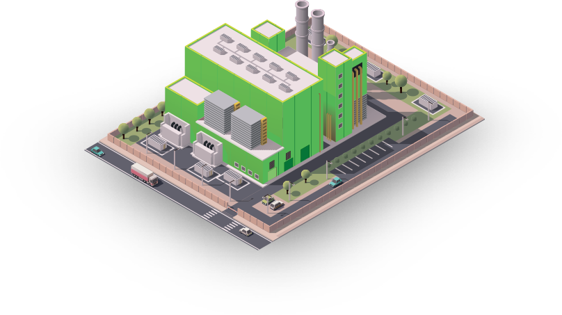

<section class="quality" id="quality">
    <div class="quality-container">
        <span class="quality__title">Политика качества</span>
        <div class="quality__block">
            
            <div class="quality__text">
                <span class="quality-right">Безопасность пищевой продукции - это<br>основа успеха нашего бизнеса.</span>
                <p>Для того чтобы завоевать доверие потребителей, нам необходимо производить безопасную продукцию. Мы понимаем различные потребности наших потребителей и твердо привержены, разрабатывать и выпускать безопасную продукцию смеси подсластителей наивысшего качества, чтобы гарантировать потребителям правильность сделанного ими выбора.</p>
            </div>
        </div>
        <span class="quality__subtitle">Принципы Политики в области безопасности<br> пищевой продукции:</span>
        <div class="quality-wrapper">
            <div class="quality__item">Безопасность продукции для<br> потребителей, прежде всего</div>
            <div class="quality__item">Безопасность продукции – <br>это общая ответственность</div>
            <div class="quality__item">Ориентация на клиентов и <br>потребителей в сердце<br> нашего бизнеса</div>
            <div class="quality__item">Построение и поддержание<br> системы, безопасность<br> нашей продукции</div>


        </div>
    </div>
</section>